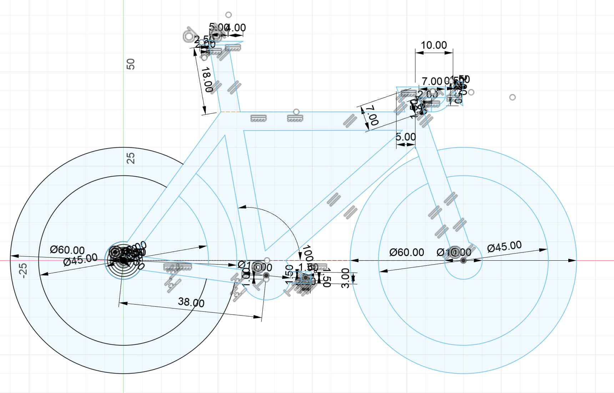
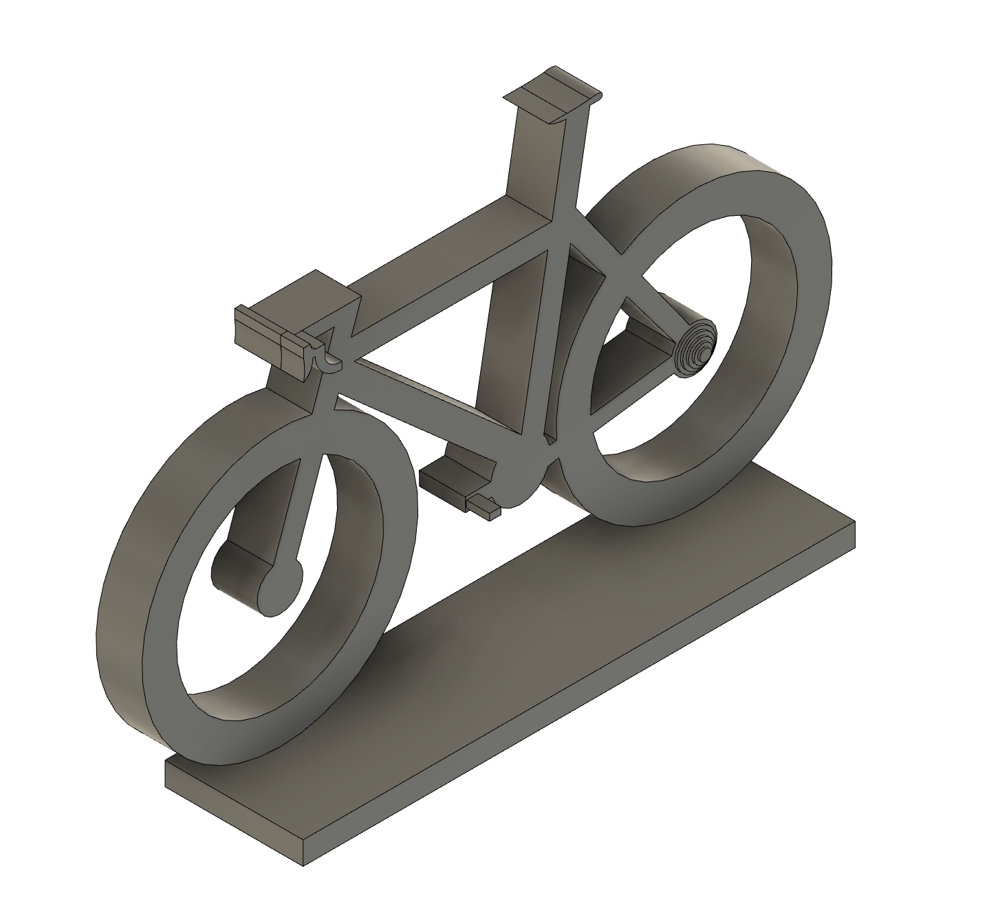
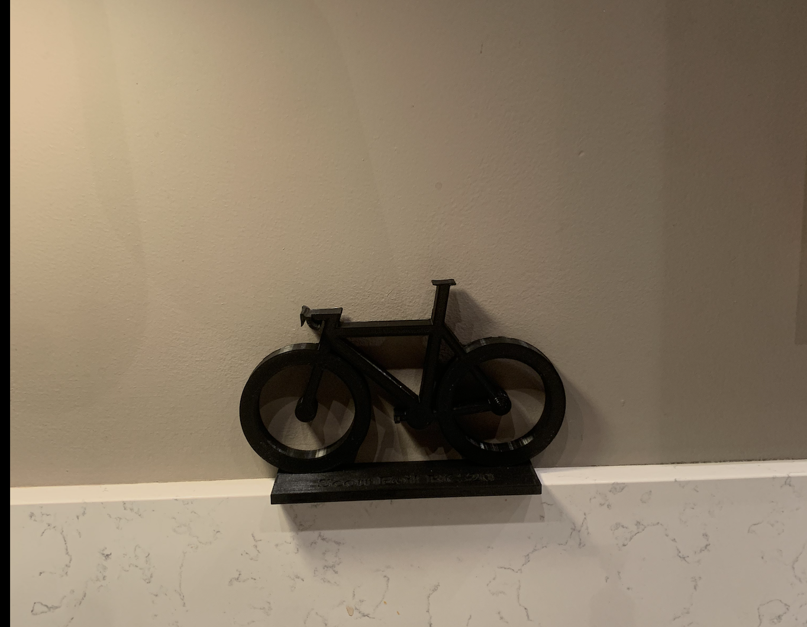

Verkefni 3 - 3D prentun og 3D skönnun
3D skönnun
Fyrst byrjaði ég að sækja forrit í símann minn sem heitir Polycam. Eftir það tók ég 3D skönnun af vasa sem ég fékk frá ömmu minni. Hægt er að sjá myndband af 3D skönnuninni hér að neðan.
3D prentun
Að teikna hjólið
Gerði verkefnið í Fusion og byrjaði á því að gera 2D sketch af hjólinu. Bætti svo við kasettu og pedala í sama sketch en svo gerði ég standinn sem hjólið stendur á í sinn eigin sketch. Notaði svo Combine tólið í Fusion til að passa að þetta væri fast saman.
Mynd af sketch 1
Þegar ég var búinn að nota Extrude tólið og velja þykkt þá var þetta lokaútkoman á hjólinu
3D prentun
Eftir að hafa hlaðað skránni niður sem .f3d gat ég fært skránna yfir í PrusaSlicer
Eftir að hafa sótt .f3d skránna í PrusaSlicer gerði ég þessar stillingar til að undirbúa prentun

Print settings: 0.10mm DETAIL, Fillament: Generic PLA, Printer: Original Prusa i3 MK3S & MK3S+, Supports: None, Infill: 15%
Síðan fór hjólið í prentun og endaði að líta svona út.
Er mjög sáttur með hjólið, lenti í smá veseni með 3D skönnuni vegna forritin sem ég sótti af app store voru ekki góð en annars gékk þetta smurt fyrir sig